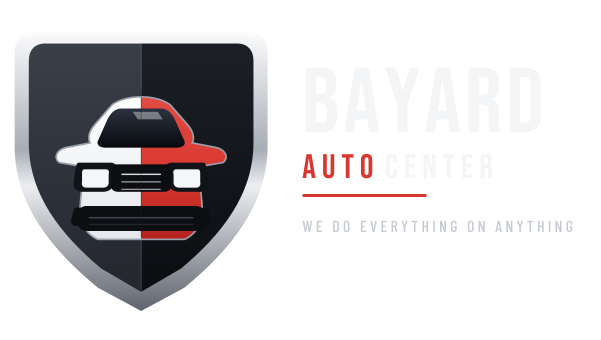
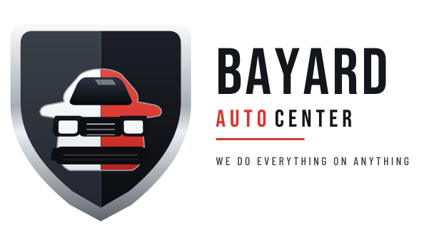
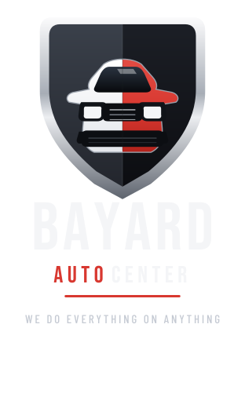
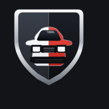
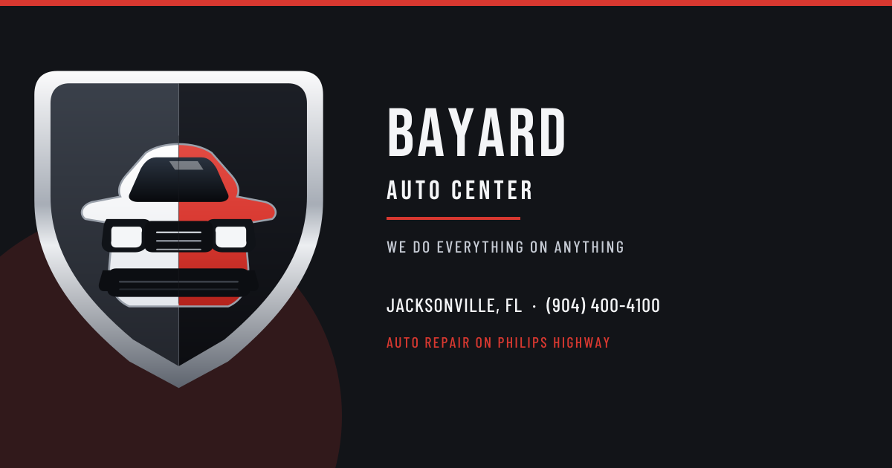

Identity · RGWebD preview
The mark.
A redraw of the shop’s shield: a front-facing sedan, split white and red, on charcoal. Wordmarks are outlined paths, so every letter is drawn geometry rather than live type.



Palette
Red, white, charcoal.
Red #D83830
White #F4F5F7
Charcoal #1C1F26
Black #090A0C


Exports in this preview: badge and lockup SVGs, logo at 1024 pixels wide, icon at 512, favicon at 32, apple touch icon, and a 1200 by 630 share image. The red is sampled from the shop’s existing mark. The wordmark reads Bayard Auto Center, with the line We do everything on anything.